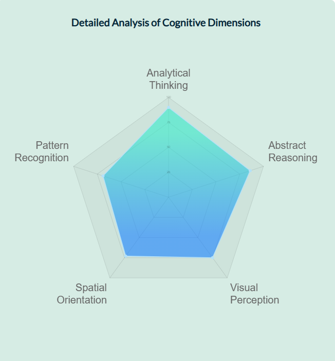

Pattern Recognition involves recognizing, identifying, and categorizing complex sensory arrangements into organized patterns that aid in memory storage and retrieval. This process is both spontaneous and automatic, defining your ability to discern order in chaotic settings. Pattern recognition is closely associated with your overall level of intelligence, as it is crucial for logical thinking and the ability to understand and interpret logical sequences.
The "Pattern Recognition" set of questions is designed to assess how swiftly and effortlessly you can perceive the underlying mechanics of various scenarios and identify connections between different elements.